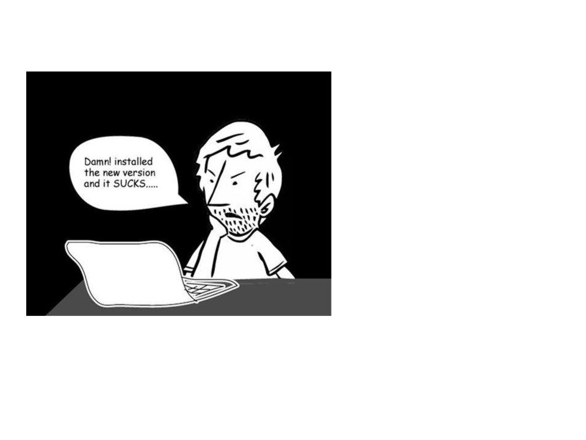
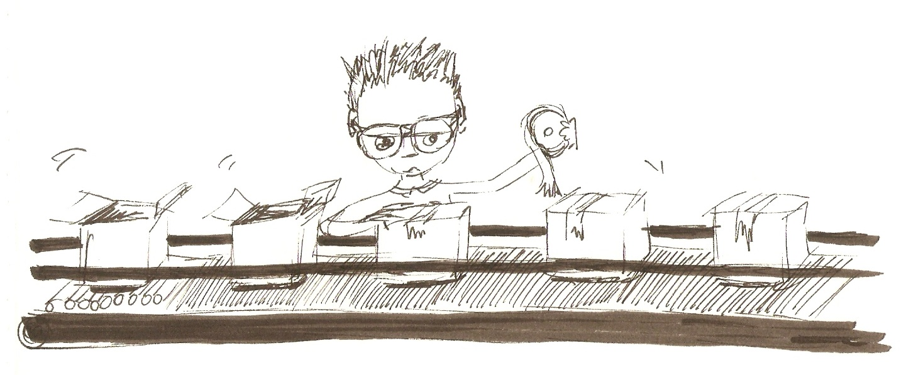

No checks are required for all the distributions.
Specifying required checks is a repetitive manual process
Gating on the rebuilds
So the next topic is I would like talk about how Greenwave works under the hood and where are we at today with the current implementation. All of these three services are implemented by using Flask which is a microframework for Python. It is well documented and easy to code.
--- !Policy id: 1 product_version: - fedora-26 decision_context: - bodhi_update_push_stable rules: - !PassingTestCaseRule {test_case_name: dist.abicheck} - !PassingTestCaseRule {test_case_name: dist.deplint} - !PassingTestCaseRule {test_case_name: dist.upgradepath}
$ http POST http://greenwave.stg.fedoraproject.org/api/v1.0/decision \
decision_context=bodhi_update_push_stable \
product_version=fedora-26 \
subject:='[{"item":"glibc-1.0-1.f26", "type": "koji_build"}]'{ "applicable_policies": [1], "policies_satisified": false, "summary": "1 of 3 required tests failed", "unsatisfied_requirements": [ { "item": { "item": "glibc-1.0-1.f26", "type": "koji_build" }, "testcase": "dist.abicheck", "type": "test-result-failed" } ] }
$ http --auth-type=negotiate --auth : POST \
http://waiverdb.stg.fedoraproject.org/api/v1.0/waivers/ \
result_id=1 \
product_version=fedora-26 \
waived=true \
comment="Because I say it!"{ "comment": "Because I say it!", "id": 1, "product_version": "fedora-26", "result_id": 1, "timestamp": "2017-08-16T22:21:29.926900", "username": "mjia", "waived": true }
| Space | Forward |
|---|---|
| Right, Down, Page Down | Next slide |
| Left, Up, Page Up | Previous slide |
| P | Open presenter console |
| H | Toggle this help |